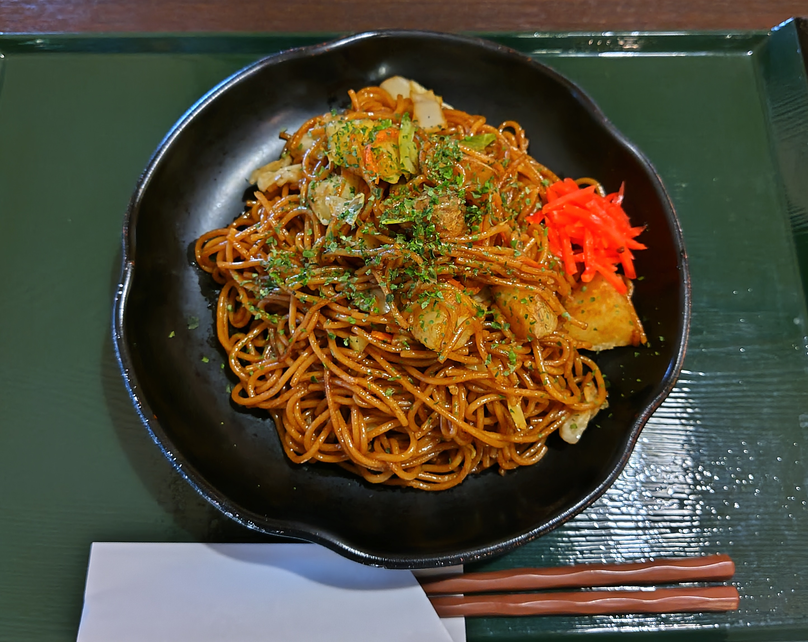

Home
Yakisoba

What is yakisoba?
Yakisoba is a popular Japanese stir-fried noodle dish made with wheat-based noodles, sliced meat (often pork), vegetables like cabbage and carrots, and a savory-sweet sauce similar to Worcestershire. It's commonly served at festivals, food stalls, and as a quick comfort food at home.
Ingredients
- ¾ lb sliced pork belly (or your choice of protein)
- ½ onion
- 4 inches carrot
- ¼ head green cabbage
- 2 green onions
- 3 shiitake mushrooms
- 2 Tbsp neutral oil (plus more, if needed)
- 3 servings yakisoba noodles
- freshly ground black pepper
- ⅓ cup yakisoba sauce
- aonori (optional)
- pickled red ginger (optional)
Steps
- Slice pork belly and vegetables into bite-sized pieces.
- Loosen and warm the pre-steamed yakisoba noodles in the pan, then transfer to a plate.
- Stir-fry pork belly first until mostly cooked; then add harder vegetables, followed by softer ones.
- Return noodles to the pan, drizzle with ⅓ cup yakisoba sauce, and toss everything together until evenly coated.
- Serve immediately with optional toppings (aonori and/or pickled red ginger).